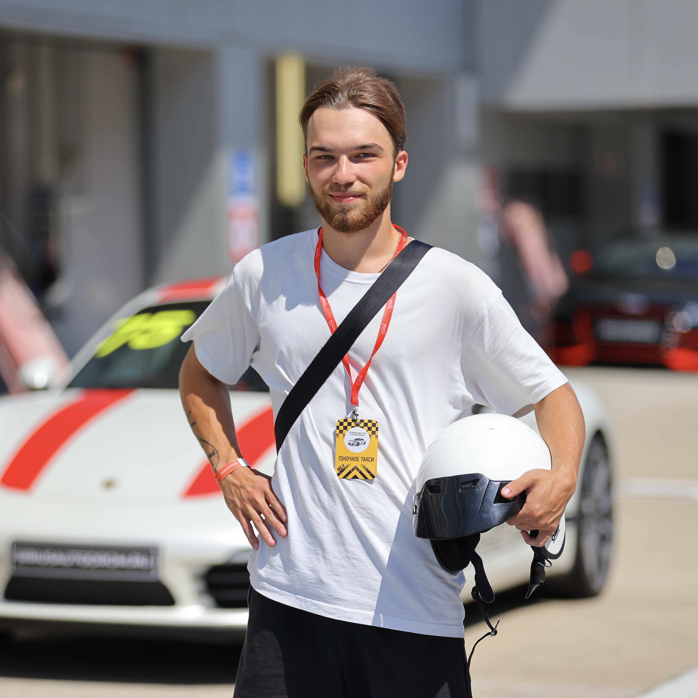

|  |
Носков Иван
Кемерово
+7 996 332 24 71
romanovich.aff@gmail.com |
Обо мне:
Прагматичный, общительный, стрессоустойчивый. Надеюсь. Тот самый "уверенный пользователь ПК", изучаю Python, как третий месяц, прогресс можно посмотреть ТУТ,
здраво мыслю и не претендую на роль разраба, но хочу им стать. Ранее работал инженером кассового оборудования, менял прошивки, регистрировал фискальные накопители
в налоговую. Далее каким то чудом (сам не понял как) оказался организатором небольшого строительного предприятия, занимался организацией работы, общением с клиентами,
продажами, маркетингом, и руководством на объектах. В целом опыт оказался очень полезным, но закончил с этим т.к. всегда больше нравилось айти. На данный момент занимаюсь
Affiliate маркетингом и продолжаю учиться. Ищу работу в менеджменте больше связаную с программированием, т.к. считаю что в таких условиях я быстрее вырасту как спецалист, обрету более
стабильную работу и интересный коллектив. Готов к работе офлайн/онлайн/гибрид, военный билет есть. Образование СПО, сейчас обучаюсь заочно КемГУ юрфак,
полноценный отпуск на сессию не требуется. Женат, вредных привычек нет.
Опыт работы:
| 2022-2024 |
Инженер кассового оборудования Архимед
|
| 2024-2025 |
Свой проект Новоград (Inst) |
| 2021-н.в. |
Solo FB media buyer |
Навыки:
- Организация работы и запуск проектов
- Коммуникация с клиентами, работа с возражениями
- Ведение CRM и учет клиентов
- Английский язык — B1-B2
- Стрессоустойчивость и мультизадачность
- Начальный уровень Python
- Хорошо гуглю и использую ИИ